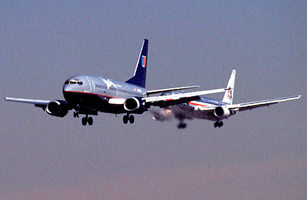
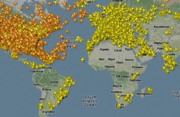
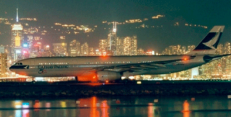
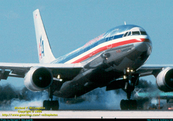

 Se no trânsito da cidade já é preciso o máximo de atenção para evitar acidentes, em aeroportos movimentados é preciso uma mobilização operacional ainda maior para garantir que uma aeronave não colida com outras.
No último fim de semana, por muito pouco, um completo desastre foi evitado no Aeroporto Barcelona.
Um Boeing 767 vindo de Moscou foi obrigado a abortar o pouso (“arremeter”) em uma manobra arriscada porque um avião da Argentinas Airbus estava atravessando a pista no mesmo momento.
Felizmente, não houve feridos.
Dentre os vários recursos de monitoramento do tráfego aéreo, um deles é inclusive acessível a toda população.
Assim como atualmente é possível a qualquer cidadão comum vigiar o desmatamento das florestas, outra aplicação utilizando os mapas do Google foi criada para fornecer informações de vários dos aviões em trânsito no planeta em “tempo (quase) real”.
O FlightRadar24 é um site sueco que mostra dados de cerca de 6 mil aeronaves do mundo inteiro, como local de decolagem e destino, altura e velocidade dos aviões, direto em seu navegador – ou tablets e smartphones com iOS ou Android.
O monitoramento é realizado graças a uma tecnologia chamada ADS-B, que equipa 60% dos aviões em operação no mundo.
As informações são transmitidas simultaneamente para cerca de 500 receptores espalhados pelo mundo e transferidas para o site na forma de aviõezinhos amarelos.
Além disso, o órgão norte-americano de controle de tráfego aéreo, FAA, fornece informações de outra parcela de voos, que são exibidas como aviõezinhos alaranjados no mapa – por questões de segurança,com um atraso de 5 minutos.
Esse sistema garante que todos os voos dos EUA e Canadá, além de 95% dos voos europeus, e ainda uma parte do tráfego aéreo de outros locais sejam rastreados.
Os aeroportos inseridos em zonas urbanas densamente povoadas são conseqüência da ocupação desordenada do solo.
Várias cidades no mundo passam por esse tipo de situação.
Infelizmente, a desativação total desses serviços muitas vezes é inviável, ainda mais em nosso país, cujos recursos financeiros são escassos.
No entanto, em casos extremos como o do Aeroporto de Congonhas, devem ser tomadas medidas drásticas na operação aeroportuária a fim de minimizar esse impacto negativo.
Um controle rigoroso do tipo e do peso das aeronaves que operam no local e das distâncias percorridas, a limitação nos horários da operação aeroportuária e, acima de tudo, controlar a demanda e manter uma infra-estrutura de pistas e pátios executados com todo o rigor técnico, atendendo às normas internacionais, são fatores fundamentais a serem considerados no planejamento aeroportuário.
Se nós entendermos o tráfego aéreo como prioritário no atendimento ao maior número possível de pessoas, não podemos imaginar aeroportos distantes dos centros urbanos.
E mesmo os que já existem, ou estão em projeto fora das grandes cidades, serão inevitavelmente engolidos por elas com o tempo.
Portanto, não se trata de implantarmos terminais cada vez mais afastados, de vinte em vinte anos.
Temos, sim, de resolver esse problema restringindo o uso residencial e comercial nas áreas de aproximação das aeronaves, para garantir as chamadas áreas de escape das pistas, respaldando-se numa política rigorosa de uso do solo e na continuidade administrativa de seus gestores.
A maior parte dos acidentes em aeronáutica ocorrem durante a decolagem e a aterrissagem, que são justamente as partes mais críticas do vôo.
Isso é facilmente compreensível tendo em vista que nessas situações, em caso de uma falha, o piloto terá muito menos tempo disponível para reagir.
A seguir são apresentadas algumas considerações no que se refer a pouso e decolagem: Respeito aos procedimentos
A primeira consideração a ser seguida para uma decolagem segura é sempre respeitar as normas de decolagem e aterrissagem.
Durante a decolagem existe uma velocidade, chamada velocidade de decisão, antes da qual caso uma falha ocorra na aeronave é obrigatória a abortagem da decolagem.
Caso a falha ocorra depois da velocidade de decisão, a decolagem é então obrigatória.
Tal velocidade é determinada levando-se em consideração as características da aeronave e a pista em que ela está decolando.
Considerando vôos comerciais, sempre são obrigatórios antes da decolagem uma série de instruções aos passageiros.
São obrigatórios instruções sobre onde e quando se pode fumar (durante a decolagem e aterrissagem o fumo é proibido), e sobre a obrigatoriedade do uso do cinto de segurança durante decolagens e aterrissagens, assim como a de se colocar os assentos na aposição vertical.
Também devem ser fornecidas informações sobre a localização das saídas de emergência e, em casos de vôos a grandes altitudes, do uso de máscaras de oxigênio suplementar em emergências.
Trovoadas violentas podem acarretar precipitações de até 50 gramas de água por metro cúbico, o que em teoria pode vir a apagar as turbinas de um avião.
Relâmpagos podem ocorrer dentro de uma nuvem, entre duas nuvens ou entre uma nuvem e o solo.
Aquaplanagem é causada por uma camada de água que se interpõe entre a pista e os pneus da aeronave, formando uma barreira que reduz drasticamente o atrito dos pneus com o solo, colocando assim em risco a aterrissagem.
Pedras de gelo de até 5 polegadas são encontradas em alturas de 10000 pés.
Considerando que pedras de apenas 2 polegadas já podem causas danos diversos em aeronaves.